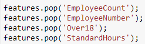

Why are we here?
Every employer, at one point or another, faces employee turnover. Given the cost of recruiting a new employee, on-boarding, training, and the learning curve that a new employee faces to be able to bring value to their new position, being able to prevent the loss of a seasoned employee holds value to the employer.
We are going to look at a publicily availble dataset that is popular on Kaggle ( Available Here ) and walk through preprocessing, feature selection, oversampling, and finally classification of the label class.
It is all about the data
There is a little bit of prep that needs to be done before we dig into the data and code. If you would like to follow along, here is a link to the python environment file that I used in this research: Here is my environment File.
The IBM HR Attrition data set is a fictional dataset created by IBM scientists. This dataset has been used in multiple papers and in various notebooks on the Kaggle competition website. The attrition dataset has 1470 rows, with 35 columns . The label in this case is yes or no, where yes implies that the employee has left the organization and no implies that they stayed. The ’yes’ result is 84% of the data and the ’no’ result is 16%.First we are going to import all required libraries for this analysis:
To load the dataset you can read it in using Pandas, I call my data variable attritionData. Before I get started I split my data into a dataset of features and an array of labels.
Time for a little housekeeping

The testing data was not resampled to provide a clean test dataset to test the algorithms against.
Selecting the right features
Columns were dropped based on feature importances with a threshold of 0.015
Creating new data from old data
SMOTE